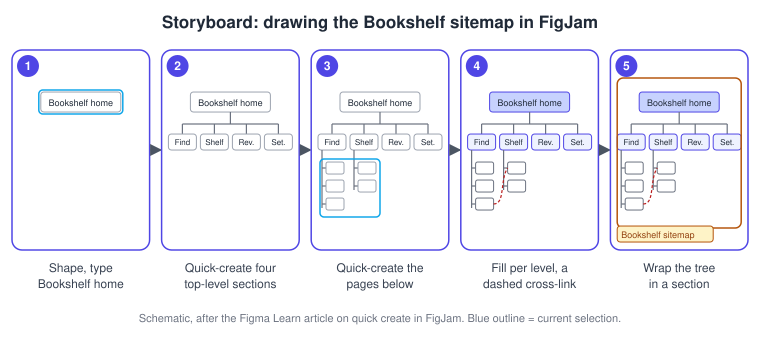
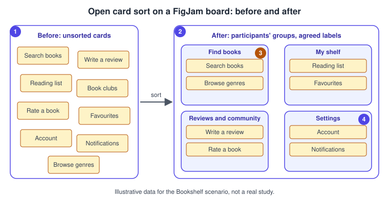
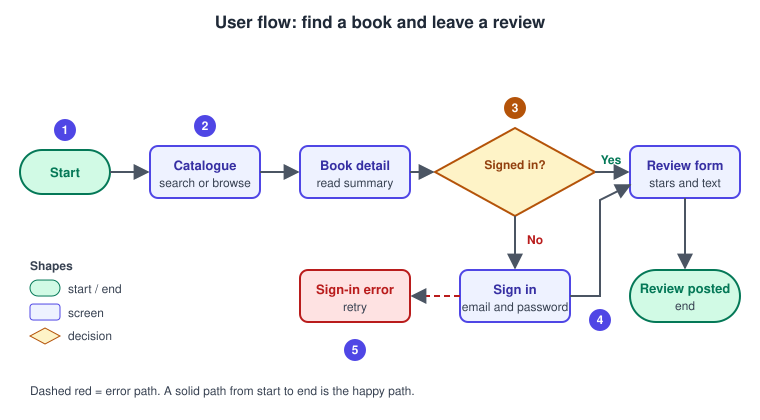

Information Architecture and User Flows
|
This content was generated with the assistance of AI and should be verified against the official documentation before being relied on in production. |
This page was written on 2026-10-30 against the UI3 interface of FigJam, Figma’s whiteboard product. Everything here is done on a FigJam board: shapes, stickies and connectors are available to anyone with edit permission, and the help article on connectors lists no plan or seat requirement. Two things are plan-dependent: the help article on shapes says basic and flowchart shapes work on any plan while advanced shapes need a paid plan, and the article on FigJam AI says it is available on all paid plans. None of the features used on this page is described as beta in those articles at the time of writing. The process around them is in UX Process and Design Thinking, and the research that feeds a card sort is in Research, Personas and Journey Maps.
The running example is Bookshelf. You will give the app a structure (what exists and where it lives), check that structure with a card sort, and then draw the path one persona takes through it to find a book and leave a review. Only after that do you draw screens, which is the job of Wireframing and Fidelity.
Three questions, three artefacts
Information architecture (IA) is the practice of organising and labelling content so that people can find it. Figma’s resource library describes a sitemap as one component of IA, and IA as broader than the map because it also covers labelling and how people interact with the content. A user flow answers a different question: it shows how a person moves through screens to reach a goal. The same resource library contrasts the two by saying a sitemap focuses on content organisation and navigation structure, while a flow focuses on the user’s journey.
| Artefact | Question it answers | Typical FigJam shape |
|---|---|---|
Sitemap |
What exists, and under which parent? |
A tree of rectangles joined by connectors |
Card sort |
What groups and labels make sense to users? |
Stickies moved into sections |
User flow |
Which steps does one person take to reach one goal? |
Screens, decisions and start/end terminators |
Task flow |
Which steps does the task need, whoever performs it? |
The same shapes, without a single persona |
A user flow starts from a person and a goal ("Lena, a book-club organiser, wants to review a book she just finished"). A task flow starts from the task and ignores who does it ("review a book"). Use a task flow when the steps are the same for every user, and a user flow when the persona’s context changes the path, for example a signed-in member versus a visitor.
Building blocks in FigJam
Three FigJam features are enough for all the artefacts on this page.
-
Shapes with text: choose the Shape tool in the bottom toolbar, or open More shapes for the full set. Square and ellipse have shortcuts (R and O); other shapes do not. You can also open the quick actions bar (Command / on macOS, Control / on Windows) and type a shape name such as "diamond". The flowchart shapes (terminator, decision diamond, process) are the ones used below.
-
Connectors: press X or Shift L for a bent connector and L for a straight line; curved connectors are available from the toolbar. Connectors snap to shapes and stickies, so they follow when you move an object. Each connector has separate start and end styles (None, Solid arrow, Line arrow, Triangle and Diamond), a solid or dashed line, and thin or thick weight. Add a label from the connector’s toolbar; connector text supports only bold and strikethrough. Hold Command (macOS) or Control (Windows) while moving an endpoint to attach it to any part of an object instead of a side. Press V or Esc to leave the connector tool.
-
Quick create: select a shape and press Command Return (macOS) or Control Enter (Windows) to add a new shape to the right with a connector already attached and its text ready to type. Hovering over the blue dot on a selected shape lets you add a connected shape on any side. This is the fastest way to type out a sitemap or a flow.
Sitemaps
A sitemap is a tree: a root, a few top-level sections, and pages below them. Keep it to the content and the navigation, with no layout. Two rules of thumb help: give every page exactly one parent, and prefer wide and shallow over narrow and deep, so that fewer taps reach any page. These are general IA heuristics rather than Figma features, so validate them with users (see the card sort below).
The Bookshelf sitemap, drawn here as a Mermaid diagram. In FigJam you would build the same tree with rectangles and bent connectors; dashed lines are cross-links: Book detail has one parent (Find books) but is also reachable from search results and genres, and it links to the reading list.
Procedure: draw the Bookshelf sitemap in FigJam.
-
Create a FigJam file and name it "Bookshelf IA". Draw a rectangle (choose it from the Shape tool) and type "Bookshelf home".
-
With the shape selected, press Command Return (macOS) or Control Enter (Windows) four times, or hover the blue dot and add shapes below, to create the four top-level sections with connectors attached.
-
Select a section and quick-create its children, typing the label straight after each shape appears.
-
Select all the shapes and connectors, set the same fill colour per level (for example indigo tint for sections, white for pages), and use the connector toolbar to make the cross-link dashed.
-
Wrap the finished tree in a section so it can be shared as one object.

Card sorting
A card sort asks participants to group cards, each naming a piece of content, so that you learn the mental model behind the labels. Figma’s resource material distinguishes an open sort, where participants create and name their own groups, from a closed sort, where they place cards into groups you defined. Run an open sort first, when you do not know the right groups, and a closed sort later to confirm a structure you have drafted.
FigJam has no dedicated card-sort feature in the help articles consulted, so a sort is built from ordinary stickies and sections. Figma Community also hosts card-sort template files made by third parties; their quality and licences vary, so check each before reuse. Treat the result as small-sample qualitative evidence rather than a statistic, and combine it with the participants and methods in Research, Personas and Journey Maps.

-
Unsorted cards: one sticky per feature or content item, written in plain words (nine are shown; a real sort usually has dozens).
-
Sort step: each participant drags cards into their own sections, which can be done live in a moderated session or one copy of the board per person.
-
Participants' groups: the four groups here are illustrative. Where several people share a group, that group is a candidate top-level section.
-
Agreed labels: compare the names people gave their groups; the most common wording becomes the navigation label in the sitemap.
Procedure: run an open sort.
-
Create a section called "Cards" and add one sticky per Bookshelf feature.
-
Duplicate the board once per participant, or invite them to the file with edit permission for a live session.
-
Ask each participant to create sections and drag cards into them, then to name each section.
-
Photograph or screenshot each result, then place all results on one overview board and look for cards that were sorted together by most people, and for cards that split people (these usually need a clearer label or two entry points).
-
Update the sitemap and repeat with a closed sort to confirm.
Source: Figma Learn: Guide to FigJam
User flows and task flows
A flow is a diagram of screens (or steps) joined by arrows, with decisions where the path can split. Use the conventional flowchart shapes so any reader can decode it: a rounded terminator for start and end, a rectangle for a screen or step, and a diamond for a decision with each outgoing arrow labelled. Draw the main route first (the "happy path" or "golden path" some books call it), then add the error and alternative routes in a different colour or dashed style. Keep one goal per flow; if you need two goals, draw two flows.

-
Start: a terminator names the entry point; add the persona beside it so reviewers know whose flow it is.
-
Screens: rectangles in the order the person sees them; the same names will later become frames in Figma Design.
-
Decision: a diamond with a yes/no question; every outgoing connector carries a label.
-
Branch: the "No" route goes through Sign in and rejoins the main path at the review form.
-
Error path: a dashed connector in a danger colour shows what happens when sign-in fails, so the error state is designed rather than forgotten.
Procedure: draw the flow.
-
Add a terminator shape, type "Start", then quick-create the next shape to the right for each screen.
-
Add Catalogue and Book detail as rectangles, then choose the diamond from More shapes for "Signed in?".
-
Add a second connector from the diamond downward for "No", and label both connectors from the connector toolbar.
-
Set the error connector to dashed and a red colour, then shift-click several connectors to edit their styling in bulk.
-
Add the persona and the success measure ("review posted") in a sticky beside the end terminator.
Later, each screen box in the flow becomes a frame in Figma Design and each arrow a prototype connection, as taught in Prototyping Basics.
Diagrams with AI
FigJam offers three routes that save typing, and all produce editable objects.
-
FigJam AI: choose Actions in the toolbar, then Make templates and diagrams, pick a suggestion or type a prompt in the "Let’s make a…" field, and click Make. The help article says it can currently create flow charts, Gantt charts and org charts, and that you can adjust the prompt and click Make again to get a new result. Anyone with edit access can use it, on paid plans. The article consulted does not mention credit limits, so check your plan’s AI-credit rules in Plans, Seats and AI Credits.
-
Pasting Mermaid: the connectors article says that pasting Mermaid.js syntax onto the board renders flowcharts, system diagrams and entity-relationship diagrams. The Bookshelf sitemap above can be pasted this way and then restyled by hand. The exact diagram types supported are the ones listed in that article, so test your syntax on a scratch board.
-
Other assistants: Figma’s help centre documents creating FigJam diagrams from Claude, ChatGPT, Microsoft Copilot and Slackbot, and a
generate_diagramtool in the Figma MCP server. These depend on separate connectors and their own availability, so read the linked articles before relying on them.
The sitemap and flow structures on this page do not appear among the diagram types the FigJam AI article lists, and the articles consulted do not mention sitemap generation, so describe a sitemap as a flowchart or hierarchy in the prompt and expect to correct it. AI output is a starting draft: always check labels, parents and decision branches against your research, and never let a generated structure replace a card sort.
Procedure: draft the flow with FigJam AI.
-
Open the Bookshelf FigJam file and click Actions in the toolbar.
-
Choose Make templates and diagrams and type: "Flow chart: a signed-in or signed-out reader finds a book in a catalogue and leaves a review, including a sign-in error".
-
Click Make, then compare the result with the hand-drawn flow above: add the missing error branch and rename screens to match the sitemap.
-
Delete anything that is not part of the goal, and keep the generated connectors only if they still attach to shapes.
Pitfalls
-
Drawing screens before the structure: the layout then hides IA problems. Draw the sitemap and one flow first.
-
Labels written by the team, not by users. Take navigation words from the card sort.
-
Flows with no error or empty states. Add a dashed path for each decision that can fail.
-
Many goals in one flow. Split it, one goal per flow.
-
Sitemaps with pages that have two parents. Use a dashed cross-link instead.
-
Treating AI output as finished. Verify every box and arrow.
-
Ignoring access needs: a flow should include keyboard and screen-reader paths where they differ; see Accessible and Inclusive Design and the site’s web accessibility page.
Where older guides are outdated
-
The 2022 book era describes FigJam as just launched, and a 2024 book describes FigJam AI as in beta. The current help article presents FigJam AI as available on all paid plans with edit access; check the article for any status label before relying on it.
-
The older books use the pre-UI3 toolbar and menu names; UI3 is the only interface since 2025-04-30, so look for Actions and the bottom toolbar instead of older menu paths.
-
Seat wording such as "editor" and "viewer" in older books predates the Full, Dev, Collab and View seats (since 2025-03-11). See Plans, Seats and AI Credits.
Not verified
The exact list of shapes in More shapes, the full set of diagram types FigJam AI can create, whether Mermaid paste covers every diagram type, and whether the connector shortcuts are unchanged in your build were not confirmed against the live interface. The card-sort steps are a workflow assembled from ordinary FigJam features, not an official Figma procedure. Check the linked articles in your own account.